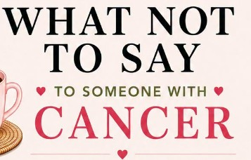

Mindset & Healing
Articles, tools, and reflections on emotional regulation, nervous system support, and personal growth.

Rising Through the Flames: A Journey of Thriving
A personal story of resilience, navigating unexpected challenges, and choosing to rebuild stronger.
Choosing Life: Why We Can Do the Hardest Things
A reflection on making difficult choices, anchoring in core beliefs, and uncovering resilience through medical challenges.
Why "Just Calm Down" Never Works When You're Triggered
Understanding the biological amygdala hijack and why physical grounding must precede rational processing during emotional overwhelm.
Photo by Rahabi Khan on Pexels

Rethinking "Stay Positive": Authentic Hope Over Toxic Positivity
Exploring how to process difficult emotions honestly while cultivating grounded, sustainable optimism.

Managing Triggers: Understanding and Regulating Your Response
Learn practical tools to recognize internal responses, calm your nervous system, and step back into control when triggered.

Finding Silver Linings in Support Networks
Discovering unexpected strength and encouragement when connecting with others along the path.